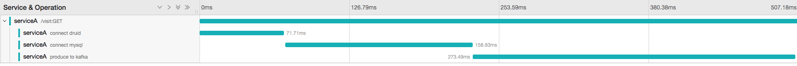

微服务追踪
微服务提供了一个强大的体系结构，但并非没有自己的挑战，特别是在调试和观察复杂网络中的分布式事务方面 - 仅仅因为没有内存调用或堆栈跟踪
分布式追踪数据模型

- Trace: 事务在分布式系统中移动时的描述
- Span：表示工作流程的一个命名的定时操作。 Spans接受k/v标签以及附加到特定跨度实例的细粒度，带时间戳的结构化日志。
- Span context: 跟踪分布式事务所伴随的信息，包括通过网络或通过消息总线将服务传递给服务的时间。 span上下文包含跟踪标识符，span标识符以及跟踪系统需要传播到下游服务的任何其他数据。
OpenTracing
OpenTracing API提供了标准，跨语言的框架, 详细教程
本文以python作为示例。
Jaeger
它用于监视和排除基于微服务的分布式系统
- 分布式上下文传播
- 分布式事务监控
- 服务依赖性分析
- 根本原因分析
- 性能/延迟优化
快速开始
场景: ServiceA 的一个接口 test 会进行一次mysql查询， 投递消息到kafka, 访问一个第三方服务druid
步骤:
- 启动Jaeger
docker run -d --name jaeger \
-e COLLECTOR_ZIPKIN_HTTP_PORT=9411 \
-p 5775:5775/udp \
-p 6831:6831/udp \
-p 6832:6832/udp \
-p 5778:5778 \
-p 16686:16686 \
-p 14268:14268 \
-p 9411:9411 \
jaegertracing/all-in-one:1.11
- 实现tracer
import logging
from jaeger_client import Config
def init_tracer(service):
logging.getLogger('').handlers = []
logging.basicConfig(format='%(message)s', level=logging.DEBUG)
config = Config(
config={ # usually read from some yaml config
'sampler': {
'type': 'const',
'param': 1,
},
'logging': True,
'reporter_batch_size': 1,
},
service_name=service,
)
# this call also sets opentracing.tracer
return config.initialize_tracer()
- 加上span的逻辑
import tornado.web
tracer = init_tracer("serviceA")
class Hello(tornado.web.RequestHandler):
def get(self, *args, **kwargs):
flag = self.request.uri + ":" + self.request.method
with tracer.start_active_span(flag) as scope:
self.connect_druid()
self.connect_mysql()
self.connect_kafka()
self.write("Hello")
def connect_mysql(self):
with tracer.start_active_span('connect mysql') as scope:
....
def connect_kafka(self):
with tracer.start_active_span('produce to kafka') as scope:
....
def connect_druid(self):
with tracer.start_active_span('connect druid') as scope:
....
- 访问serviceA这个接口, 从Jaeger UI追踪服务 
总结
- 基于OpenTracing能够实现微服务全io的监控, 易于查找问题,
- 对业务代码有侵入型， 业务端引入是否方便还得考量。
- 加上opentracing会不会对原服务的性能造成影响。